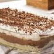

Pave
Pagina Principal

Descricao
O pave e um doce famoso, principalmente em epocas festivas.
Esta receita te ensinara a fazer um desses deliciosos paves.
Ingredientes
- Meia xícara de chá de amido de milho
- 2 xícaras de chá de leite
- 1 lata de leite condensado
- 1 colher de chá de essência de baunilha
- 250 gramas de chocolate picado
- 1 lata de creme de leite
- 2 pacotes de biscoito champanhe
- Leite a gosto para molhar o biscoito champanhe
- 200 gramas de chocolate granulado
Modo de Preparo
- Em um recipiente, dissolva meia xícara de chá de amido de milho em 2 xícaras de chá de leite.
- Transfira a mistura para a panela e adicione 1 lata de
leite condensado e 1 colher de chá de essência de baunilha. Ligue o fogo e cozinhe até engrossar.
- Em seguida, adicione 250 gramas de chocolate picado e misture até derreter.
- Acrescente 1 lata de creme de leite, misture e reserve.
- Umedeça os biscoitos champanhe em leite.
- Em seguida, faça uma camada com os biscoitos em um refratário.
- Despeje parte do creme e depois coloque mais uma camada de biscoitos.
- Coloque o restante do creme e finalize com o chocolate granulado.
- Leve para gelar por 3 horas antes de servir.